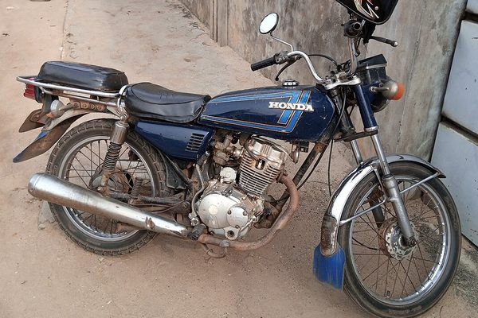
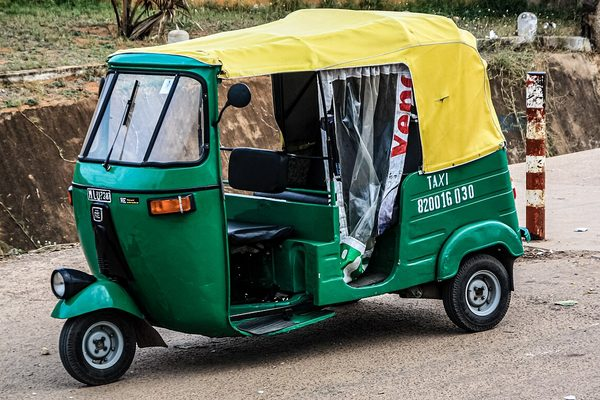
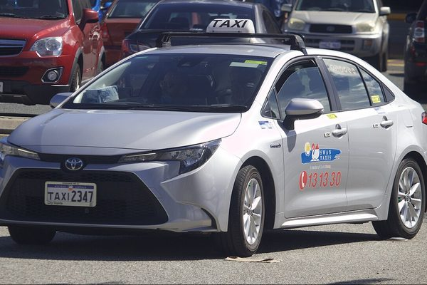

Mota
Viagem mais rápida · 1 pessoa
Passa pelo trânsito e chega primeiro. Ideal para quem vai só.
Mota, txopela ou táxi. Diz para onde vais, vê o preço e pede, tudo em segundos.
Em fase de testes: as viagens ainda não chamam motoristas reais.

O preço aparece antes de pedires, para cada veículo. Sem surpresas no fim.

Viagem mais rápida · 1 pessoa
Passa pelo trânsito e chega primeiro. Ideal para quem vai só.
Viagem · até 3 pessoas
Cabe a família e as compras. Leva carga pequena.

Viagem mais confortável · até 4 pessoas
Fechado e com mais espaço, para viagens longas ou com malas.
Escreve o destino ou fala para o microfone. Também podes marcar o ponto no mapa.
Mota, txopela ou táxi, cada um com o seu preço. Escolhe como vais pagar.
Vês o motorista a chegar no mapa. No fim, avalia a viagem.
Mototaxistas, txopelistas e taxistas: regista-te na ROTA e recebe pedidos de passageiros perto de ti.
Abre a ROTA aqui no site, sem instalar nada, ou instala a app para Android.
A app para Android chega em breve à Play Store.